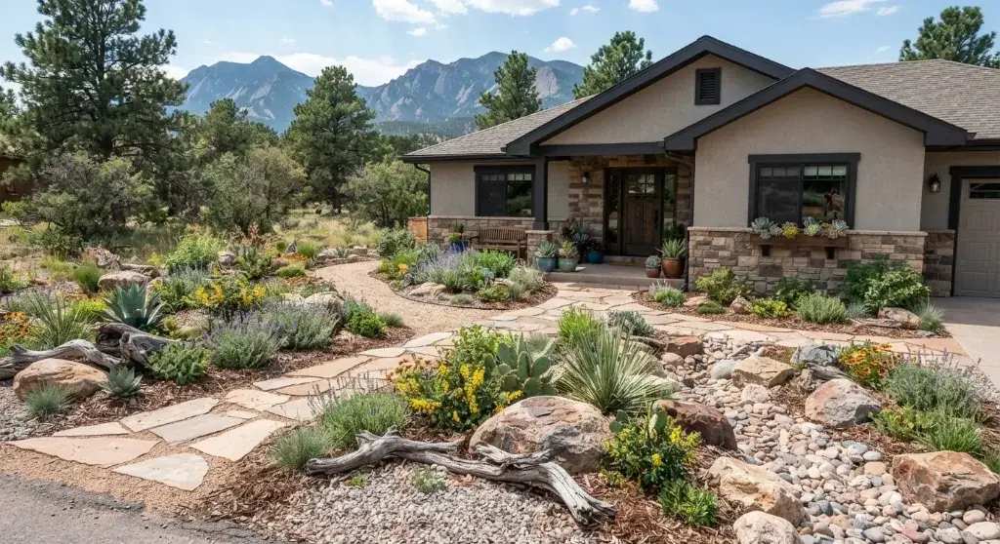

Layout & circulation
Where you sit, where you walk, where the grill goes, and how the hose reaches the far bed. Paths and patios get placed around real use, not around a magazine photo.
The expensive mistakes in a yard are layout mistakes: a patio where water pools, a bed that needs more water than its zone can give, a path that dead-ends. We plan the property first, then build it in the order your budget allows.

Design isn't a drawing for its own sake. It settles the four things that are expensive to change later.
Where you sit, where you walk, where the grill goes, and how the hose reaches the far bed. Paths and patios get placed around real use, not around a magazine photo.
Every plan starts with which way the ground falls and where roof water lands. A design that ignores drainage just moves the problem under a new patio.
Flagstone, pavers, gravel, or steel edging — chosen for how they handle freeze-thaw and how they meet the lawn, the fence, and the house.
Sun exposure, wind, and irrigation coverage decide what actually lives here. We pick for the site instead of for the nursery's best-looking shelf.
Most yards we're asked to design don't need to be built all at once. A plan lets you do the structure first — the grade, the patio, the path — and add planting or a second phase later without digging up what's already finished.
That's why the phased version matters more than the pretty one: it tells you what has to happen first, what can wait a year, and what will cost more if you skip it now. Water management is almost always in the first group.
Two stages of the same idea: a bed plan set out before the stone goes in, and three raised beds built out with block edging and trellises.
Tell us what bothers you about the yard and what you'd like it to do. That's enough to start.
Start with a walk-through